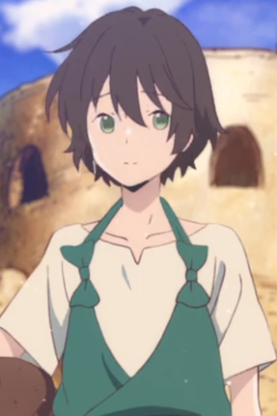
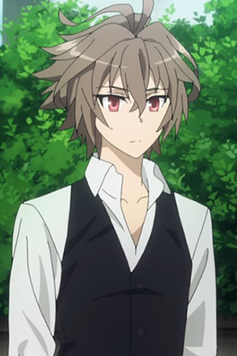

|  |
Chakuro |
- Children of the Whales
- Children of the Whales Specials
|
Chakuro is a Marked achivist living on the Mud Whale. Chakuro is a passionate and curious thinker who is curious about the world around him. He will ask questions about the outside world. He is obsessed with Writing to the point that the council counts on him to write. He is very expressively emotional and his writing is contradicts his expressive behavior. |
 |
Kento Hinode |
|
Kento Hinode is a middle school student and friend of Masamichi Isami. He is a calm and reserved boy who wish that he is more open-minded like Miyo. He has issues expressing himself. Personally, he does not like pushy people and gets angry at them as well. |
 |
Kousei Arima |
- Your Lie in April
- Your Lie in April OVA
|
Kousei Arima is a prodigy pianist. He is totally oblivious to what is going on around him. He does not notice rivalry instancely. |
 |
Rickert Bisterfelt |
|
Rickert Bisterfelt is a germanian Second Lieutenant in a Berkmann's Special Unit as second in command. He is Berkmann's right-hand man and young heir to a noble family who has decided to make his own way in the world. |
|  |
Sieg |
|
Sieg was created by Yggdmillennia as one of their many homunculi suited to various purposes. He serves as the second Master of Rider of Black during Great Holy Grail War. He is scared of everything but himself, believing to be nothing. He is good friends with Rider of Black but has romantic feelings for Ruler. |
 |
Takumi Aldini |
- Food Wars!
- Food Wars! OVA
- Food Wars! The Second Plate
- Food Wars! The Second Plate OVA
- Food Wars! The Third Plate
- Food Wars! The Third Plate: Totsuki Train Arc
- Food Wars! The Third Plate OVA
- Food Wars! The Fourth Plate
- Food Wars! The Fifth Plate
|
Takumi Aldini is a student of Tootsuki Culinary Academy who is a self-proclaimed rival to Soma Yukihira. He has a very boastful and prideful personality. He works to enhance his skill. Takumi is very resourceful and able to adapt to use any ingredients. |
 |
Yuna D. Kaito |
- Cardcapter Sakura: Clear Card
|
Yuna D. Kaito is the caretaker of Akiho Shinomoto. He is polite and almost a little clueless. He is a top-level magician of vast magical power and skill. |
 |
Yuuki Kagurazuka |
- That Time I Got Reincarnated as a Slime
|
Yuuki Kagurazuka is a Freedom Association's Grand Master for a while. Yuuki is a bright and optimistic person. His easy and good-hearted but has a destructive, suicidal personality. He has a soft spot for manga. |